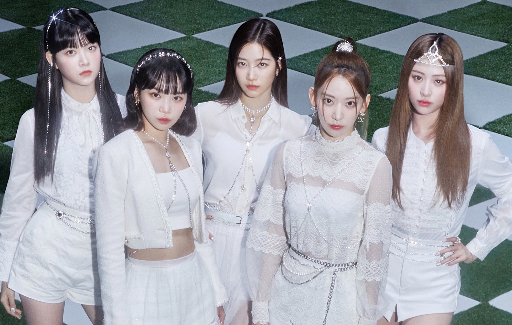
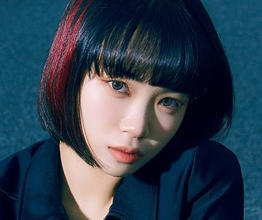
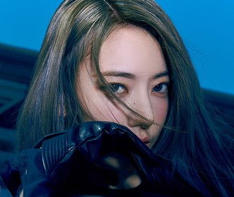
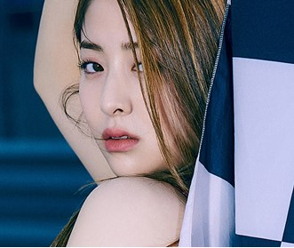
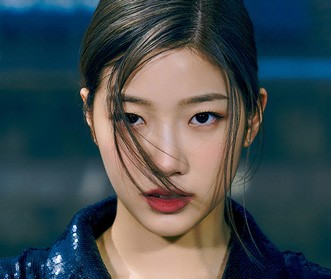
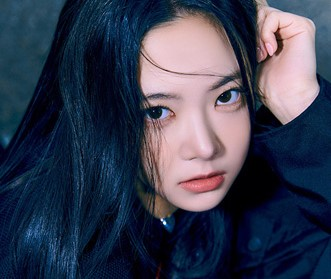

LE SSERAFIM 團體介紹

LE SSERAFIM 是韓國 SOURCE MUSIC 於 2022 年推出的女子音樂組合，現任成員包括宮脇咲良、金采源、許允眞、中村一葉和洪恩採。她們以迷你專輯《FEARLESS》在韓國和日本出道，團名源自 "I'm Fearless"，象徵無畏精神。官方粉絲名為 FEARNOT，應援色是 FEARLESS BLUE，代表熱情和能量。經紀公司為 SOURCE MUSIC，隸屬 HYBE Corporation。儘管團體經歷成員變動和爭議，她們憑藉音樂和表演迅速獲得支持，專輯《FEARLESS》和《ANTIFRAGILE》均創下銷量紀錄。
成員介紹

金采源
她同樣是透過《PRODUCE 48》出道，並擔任過 IZ*ONE 的領唱。在 LE SSERAFIM 中，她一改過去清純的形象，在歌曲《ANTIFRAGILE》中以獨特的舞蹈動作和表情管理獲得關注。

宮脇咲良
宮脇咲良是組合中年紀最大的成員，曾是日本女子偶像團體HKT48及AKB48的成員，後來參加韓國選秀節目《PRODUCE 48》獲得第二名，並加入限定團體IZ*ONE。

許允眞
韓裔美籍成員，自小在美國紐約生活。她從高中時期就參與音樂劇演出，展現對表演的熱忱。曾參加《PRODUCE 48》但未能最終出道，被認為是節目的遺珠之一。

中村一葉
來自日本，出道前在荷蘭阿姆斯特丹芭蕾舞學院就讀。她由 SOURCE MUSIC 的 CEO 親自前往網羅，最終加入 LE SSERAFIM。中村一葉擁有與秀智、金高銀、葉舒華等女星相似的氣質，被視為新一代氣質美女。

洪恩彩
組合中年紀最小的成員 (忙內)，曾參加過 JYP、Pledis 等經紀公司的練習生試鏡。雖然年紀尚輕，但她擁有可愛的外表和強大的舞台魅力。
獎項
- 韓國金唱片獎的年度新人賞
- 首爾歌謠大賞的年度新人賞
- Melon音樂獎的最佳表演獎、熱門趨勢獎以及最受歡迎新人獎
- 亞洲明星盛典的年度新人賞和最佳音樂人獎
- Circle Chart Music Awards的音源部門年度歌手獎
- 亞洲流行音樂大獎的年度TOP20金曲